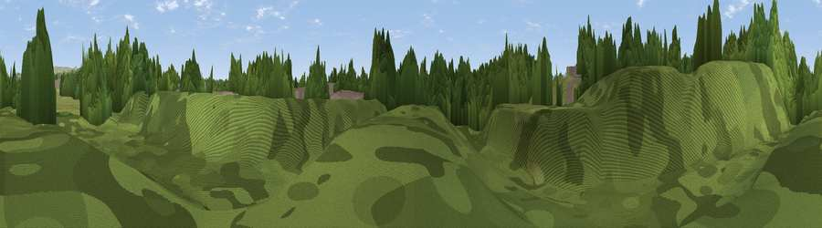

Warth Fold Site of Biological Importance
#45712 in England · top 99% of its area beats it · near BuryThe view, rendered

A 360° render of this exact spot computed from the terrain model, tree cover and land cover — summer colours, afternoon light, calibrated against photographs of famous viewpoints. Real trees, hedges and buildings will differ in detail.
The panorama
Grey silhouette: terrain skyline in each direction (720 bearings, Earth curvature and refraction included). Dashed green: skyline with trees (+15 m) and buildings (+8 m) as obstacles. Blue strip: how far the ground is visible on each bearing.
Where the view opens
Wedge length = distance to the farthest visible ground on that bearing (vegetation-aware). Rings at 10, 25 and 50 km.
What fills the view
59% woodland · 29% grassland · 10% built-up · 2% water
Angular shares of the visible panorama (visual magnitude), not map area. Landscape diversity 0.44 (0–1 Shannon).
Key numbers
More beautiful places nearby
The staircase of upgrades: each row has a higher view potential than everything closer. Driving times are estimates from straight-line distance, calibrated against real road routing — check an actual route before setting out.
| Place | Direction | Drive | Score |
|---|---|---|---|
| Viewpoint near Whitefield | SSE · 3 km | ~7 min | 44.5 |
| Viewpoint near Heap Bridge | ESE · 3 km | ~8 min | 68.9 |
| Viewpoint near Limefield | NE · 5 km | ~11 min | 71.0 |
| Viewpoint near Hazelhurst | NNW · 7 km | ~14 min | 75.1 |
| Viewpoint near Edenfield | NNE · 10 km | ~19 min | 77.5 |
| White Brow | W · 14 km | ~25 min | 82.9 |
| Warton Crag | NNW · 70 km | ~93 min | 83.2 |
| Viewpoint near Grange-over-Sands | NNW · 79 km | ~103 min | 83.4 |
53.58262, -2.31131 · source: osm peak · position refined by local search. Computed location — check access rights before visiting.